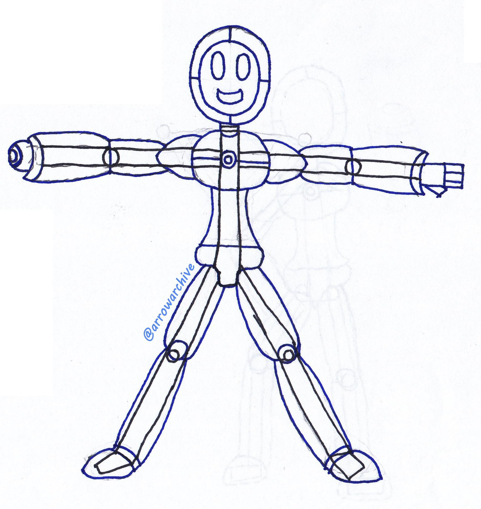
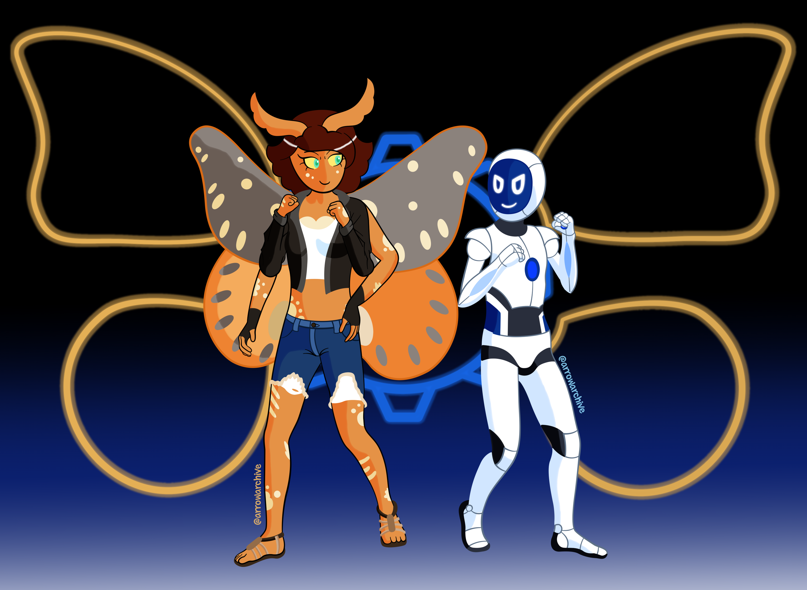

Gizmo Returns
 I'll provide context for these pictures.
A few years ago, I designed a character named Gizmo and scanned him into my computer. The next picture is my design for him 3 to 4 years later (I don't remember when I drew the original. This is why I track completion dates)
When redesigning Gizmo, it felt wrong to draw him alone. At the time, I was playing Portal, which used blue and orange. I wanted to draw an orange character to compliment him, but I struggled for ideas until I remembered seeing a regal moth. They are a distinct shade of orange, and I designed a partner for him named Cithera.
I have a lot of ideas for these two, and they were a lot of fun to work with. I'm considering changing Cithera's eye color from green to cyan, but that's about it. With enough practice, drawing them will be a piece of cake!
If you can't tell, the sign behind them is a glowing gear with wings. Maybe I should have moved them father apart to emphasize it, but it doesn't bother me that much. I plan to start another drawing soon, and I hope you enjoyed this one!